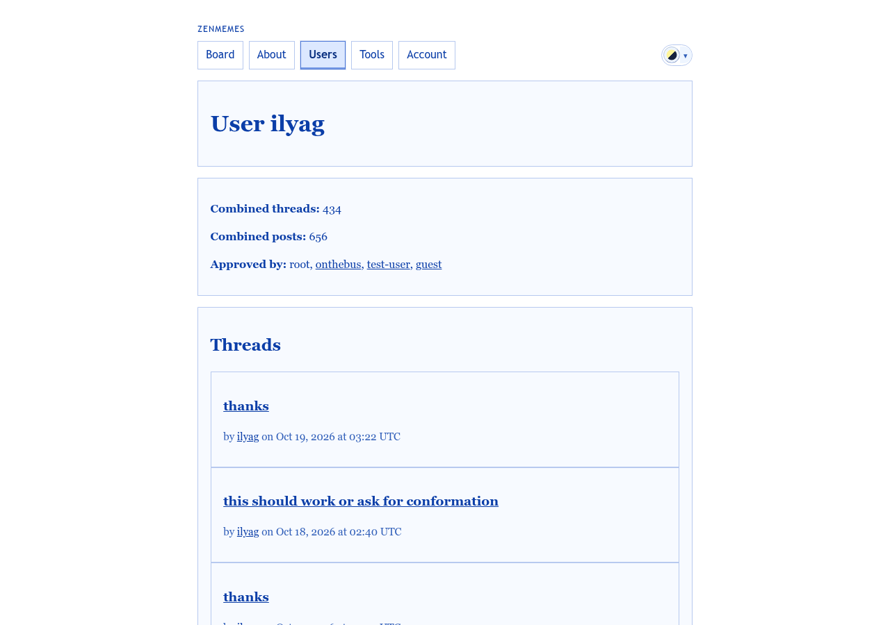
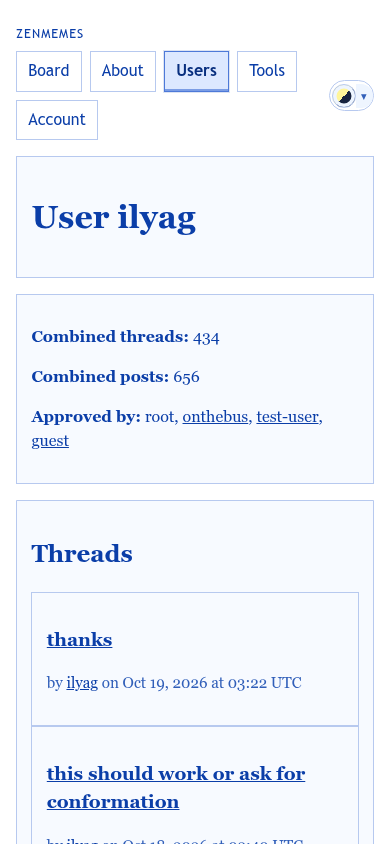

Every author name links here. It should answer “who is this, and what have they said?”, with messaging one tap away.
templates/pages/username.php (/user/…) · templates/pages/profile.php (/profiles/…) · partials/private_message_composer.php
/user/ilyag (the person) and /profiles/<slug> (one key). They become one page. Each key is a row under “Identities”; selecting it opens the key detail.

Identities
reply-agent only answers threads that others start. See Replies.